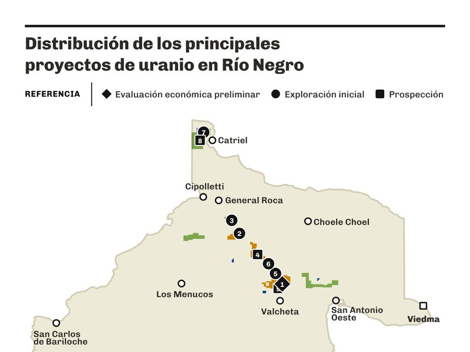
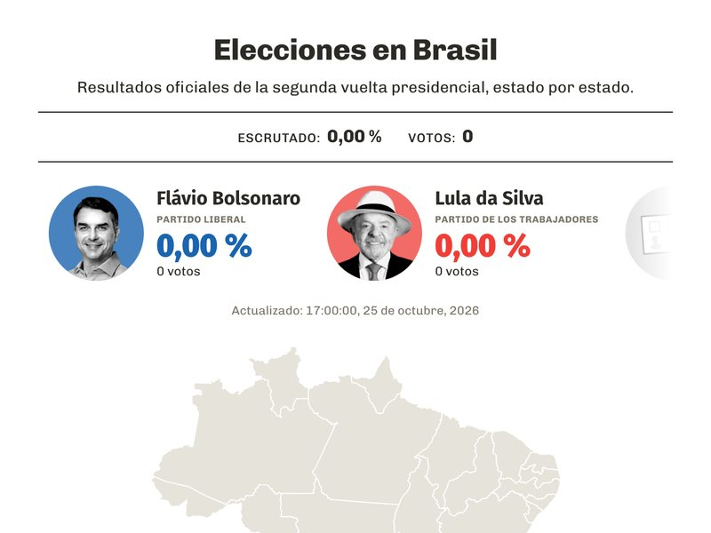

INTERACTIVO
Río Negro

Proyectos de uranio en Río Negro
Ver en
Ver en
Precipitaciones en Río Negro
Ver en
Ver en
Elecciones en Brasil
Primera vuelta presidencial
Ver en
Ver en

Segunda vuelta presidencial
Ver en
Banner: segunda vuelta
Ver en